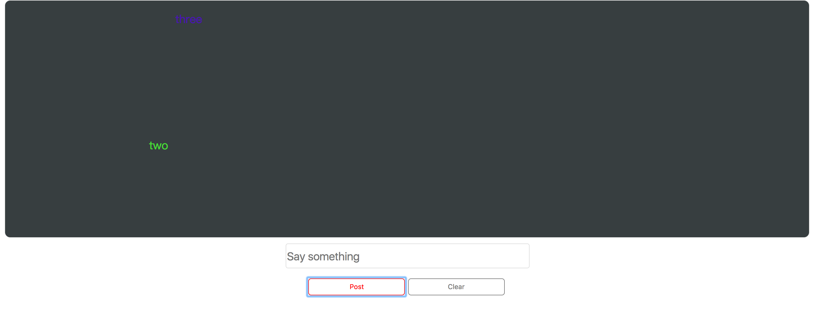

最终效果如下图：
这个app布局比较简单，由一个input和两个按钮组成，其中一个按钮用于发送消息，另一个用于清除 屏幕上已有的弹幕
点击post按钮，会将input中的消息发出去，如果为空则会弹出提示框。由于弹幕都是从右往左移动的， 所以要对弹幕墙的CSS进行如下的设置：
.danmu {
position: absolute;
font-size: 20px;
right: 0;
z-index: 1;
}
这里没有对top属性进行赋值是因为稍后可以用js来随机产生一个值给top属性，弹幕的颜色也是由 js随机产生一个值
var randomPos=Math.floor((parseInt($("#screen").innerHeight())-40)*Math.random())-20;
var randomColor=""+Math.floor(Math.random()*255).toString(16)+Math.floor(Math.random()*255).toString(16)+Math.floor(Math.random()*255).toString(16);
然后将随机的高度和颜色应用到弹幕元素上面，再将这个元素放到弹幕墙上
$danmu .css({"top":randomPos+"px","color":"#"+randomColor});
$danmu.text(text);
$danmu.prependTo("#screen");
$edit.val("");//clear input
最后，让产生的这个弹幕在屏幕上移动起来，通过jQuery的.animate()方法实现
$danmu.animate({left:-pWidth},10000,function(){
$(this).remove();
});
回调函数中使用了.remove()方法让弹幕在移动到左边了过后自动消失